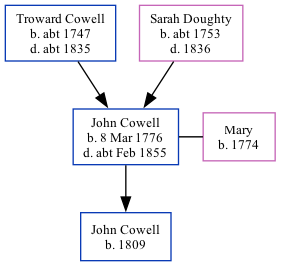

John Cowell 1776 - c1855
[ Home ] | [ Calendar ] | [ Surnames Index ] | [ Family History ]A gardener and the eldest of 7 children of Troward Cowell and Sarah DoughtyJohn Cowell, the four times great-uncle of Nigel Horne, was born in Margate, Kent, England on Mar 8, 1776, was baptized there on Mar 24, 1776 andhad 1 child, with Mary: John, .
Throughout his life, he lived at Chalk Hole in Margate on Jun 6, 18414; and at Chalk Hole Cottage in Margate on Mar 30, 18513.
He died c. Feb 1855 in Thanet, Kent, England1,2 and was buried at St John the Baptist Church in Margate on Mar 17, 18552.
Parents
- Troward was born c. 1747
- Sarah was born c. 1753
Children
- John was born in 1809
Citations
- England & Wales deaths 1837-2007 - Findmypast
- Kent, Canterbury Archdeaconry Burials - Findmypast
- 1851 England, Wales & Scotland Census - Findmypast (was age 74 and the head of the household)
- 1841 England, Wales & Scotland Census - Findmypast (was age 65)
Media
Canterbury Baptisms Transcription - GBPRS-CANT-B-96207693
1851 England, Wales & Scotland Census - GBC/1851/0005885916
1841 England, Wales & Scotland Census - GBC/1841/0013956481
Canterbury Burials Image - GBPRS-CANT-005264870-00699
England & Wales deaths 1837-2007 - BMD/D/1855/1/CL/000176/018
Family Tree
Generated by ged2site. Last updated on Nov 13, 2024